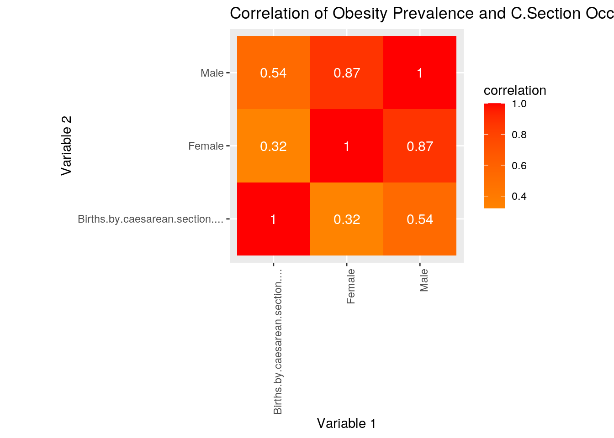
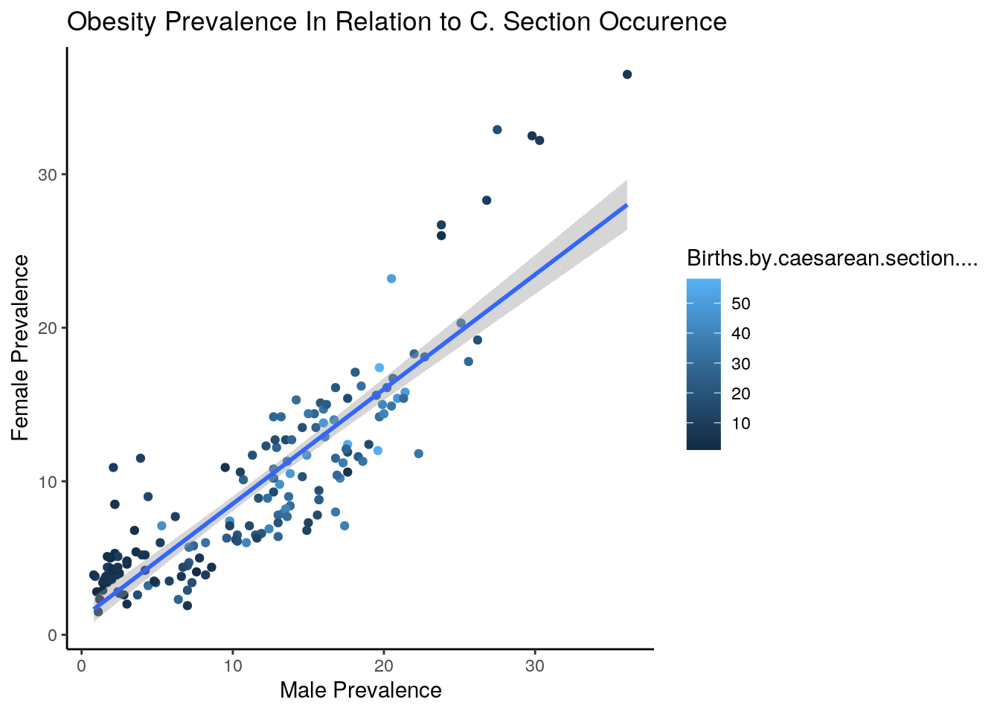
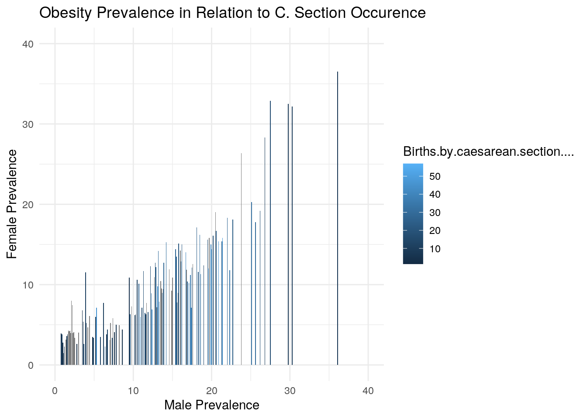
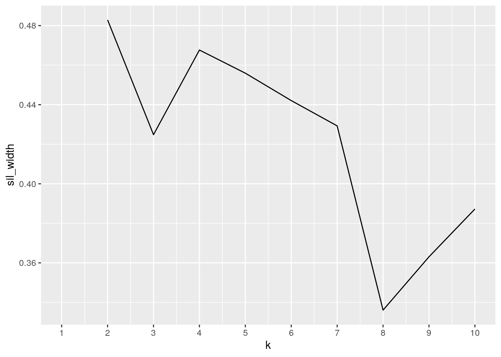
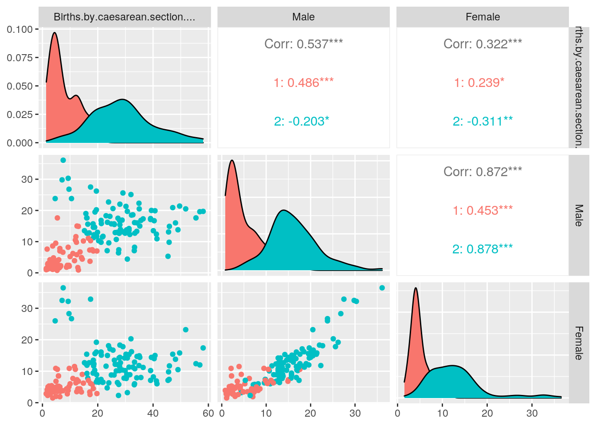
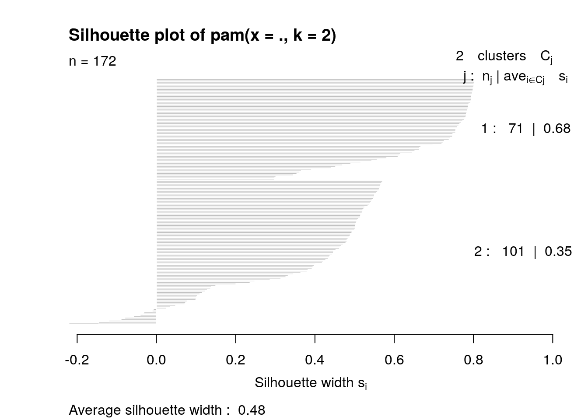
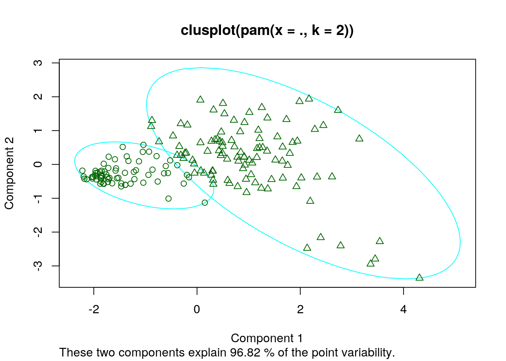
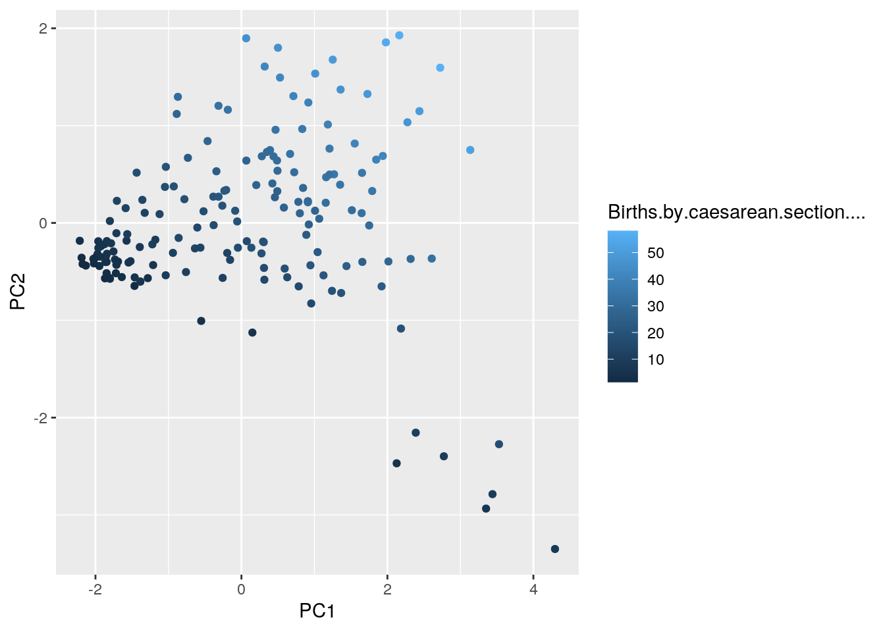

##Kamille Piacquadio kp32497
A knitted R Markdown document (ideally HTML) and the raw R Markdown file (as .Rmd) should both be submitted to Canvas by 11:59pm on the due date. These two documents will be graded jointly, so they must be consistent (i.e., don’t change the R Markdown file without also updating the knitted document).
The text of the document should provide a narrative structure around your code/output. All results presented must have corresponding code. Any answers/results/plots etc. given without the corresponding R code that generated the result will not be considered. Furthermore, all code contained in your final project document must work correctly (knit early, knit often)! Please do not include any extraneous code or code which produces error messages. (Code that produces warnings is acceptable, as long as you understand what the warnings mean!)
Find two (!) datasets with one variable in common (e.g., dates, times, states, counties, countries, sports players), both with at least 50 observations (i.e., rows) in each. Please think very carefully about whether it makes sense to combine your datasets! If you find one dataset with 50 patients and it has their age, and you find another dataset with 50 different patients that has their ages, it makes no sense to join them based on age (you would just be pairing up random people of the same age).
When combined, the resulting/final dataset must have at least 4 different variables (at least 3 numeric) in addition to the common variable (i.e., five variables total).
You can have as many variables as you would like! If you found two datasets that you like but they don’t have enough variables, find a third dataset with the same common variable and join all three.
If the datasets are not tidy, you will need to reshape them so that every observation has its own row and every variable its own column. If the datasets are both already tidy, you will make them untidy with pivot_wider()/spread() and then tidy them again with pivot_longer/gather() to demonstrate your use of the functions. It’s fine to wait until you have your descriptives to use these functions (e.g., you might want to pivot_wider() to rearrange the data to make your descriptive statistics easier to look at); it’s fine long as you use them at least once!
Depending on your datasets, it might be a good idea to do this before joining. For example, if you have a dataset you like with multiple measurements per year, but you want to join by year, you could average over your numeric variables to get means/year, do counts for your categoricals to get a counts/year, etc.
If your data sets are already tidy, demonstrate the use of pivot_longer()/gather() and pivot_wider()/spread() on all or part of your data at some point in this document (e.g., after you have generated summary statistics in part 3, make a table of them wide instead of long).
Join your 2+ separate data sources into a single dataset based on a common ID variable! If you can’t find a good pair datasets to join, you may split one main dataset into two different datasets with a common ID variable in each, and then join them back together based on that common ID, but this is obviously less than ideal.
Create summary statistics
Use all six core dplyr functions (filter, select, arrange, group_by, mutate, summarize) to manipulate and explore your dataset. For mutate, create a new variable that is a function of at least one other variable, preferably using a dplyr vector function (see dplyr cheatsheet). It’s totally fine to use the _if, _at, _all versions of mutate/summarize instead (indeed, it is encouraged if you have lots of variables)
Create summary statistics (mean, sd, var, n, quantile, min, max, n_distinct, cor, etc) for each of your numeric variables both overall and after grouping by one of your categorical variables (either together or one-at-a-time; if you have two categorical variables, try to include at least one statistic based on a grouping of two categorical variables simultaneously). If you do not have any categorical variables, create one using mutate (e.g., with case_when or ifelse) to satisfy the group_by requirements above. Ideally, you will find a way to show these summary statistics in an easy-to-read table (e.g., by reshaping). (You might explore the kable package for making pretty tables!) If you have lots of numeric variables (e.g., 10+), or your categorical variables have too many categories, just pick a few (either numeric variables or categories of a categorical variable) and summarize based on those. It would be a good idea to show a correlation matrix for your numeric variables (you will need it to make one of your plots).
Make visualizations (three plots)
stat="summary"Perform k-means/PAM clustering or PCA on (at least) your numeric variables.
Include all steps as we discuss in class, including a visualization.
If you don’t have at least 3 numeric variables, or you want to cluster based on categorical variables too, convert them to factors in R, generate Gower’s dissimilarity matrix on the data, and do PAM clustering on the dissimilarities.
Show how you chose the final number of clusters/principal components
Interpret the final clusters/principal components
For every step, document what your code does (in words) and what you see in the data!
Prerequisite: Finding appropriate data from at least two sources per the instructions above: Failure to do this will result in a 0! You will submit a .Rmd file and a knitted document (html/pdf).
The first of the datasets acquired for this project include the prevalence of obesity among children and adolescents (ages 5 to 9) in percentages in the year 2016 for both males and females in recorded countries across the globe. The second dataset shares the common ID of country found in the first dataset and includes years of data collected for cesarean sections performed and total percent performed. These were acquired by querying the World Health Organization database. I find these data interesting as obesity is becoming a global epidemic and can be influenced by environmental variations individuals are exposed to. One associated finding with obesity is a change in microbial community ratio of lean vs obese subjects in a multitude of studies. Interestingly, at birth a large and vital microbial community is introduced to the offspring upon exiting the mother’s body naturally. However, these communities are not acquired in needed abundance if the child is delivered via cesarean section and shift the balance/abundance of communities found in the gut. Therefore, I was curious to see if rate of cesarean section corresponded to the prevalence in obesity in both males and females between ages 5 and 9 in these countries.
I would speculate that the countries who more widely use c. section as an alternative means for child birth that a greater percentage of children may also be impacted by obesity, and thus increasing prevalence of obesity in the corresponding country.
#Load in proper packages
library(tidyverse)
library(ggplot2)
library(cluster)
library(GGally)#Import Data
obesityprev <- read.csv("obesityprev.csv", header = TRUE)
csection <- read.csv("csection1.csv", header = TRUE)tidyr functions pivot_longer/gather and/or pivot_wider/spread)dplyr join function#Joining datasets using left_join
csobesity <- left_join(csection, obesityprev, by = "Country")The process used to join the ‘csection’ and the ‘obesityprev’ datasets to combine into one dataset termed ‘csobesity’ was left_join. The command left_join is one of the most common join commands used. It allows the datasets to be combined based on one common variable (in this case it was Country). It kept all of the rows (observations) from the csection dataset and added the rows from obesityprev that had matches with the common variable ‘Country’. If there were countries included in the obesityprev dataset that were not also in the csection dataset then they would have been dropped out of the joined dataset. The resulting dataset ‘csobesity’ has the same amount of rows as the original dataset csection. However, the dataset ‘obesityprev’ did not have the same amount of rows and identical countries so there were approximately 19 countries lost in the join. This may neglect to analyze some countries where cases of obesity prevelance are high, but they would not be impactful findings in respect to the question being asked here which is how c.section and obesity prevelance are related.
Use all six core dplyr functions in the service of generating summary tables/statistics (12 pts)
Compute summary statistics for each of your variables using summarize alone and with group_by (if you have more than 10 variables, fine to just focus on 10) (20 pts)
Summarize/discuss all (or the most interesting) results in no more than two paragraphs (4 pts)
Tidy the datasets (using the tidyr functions pivot_longer/gather and/or pivot_wider/spread)
If you data sets are already tidy, be sure to use those functions somewhere else in your project (e.g., for rearranging summary statistics)
Document the process (describe in words what was done)
# Obtaining summary statistics for cesarean section that
# include mean, standard deviation and standard error across
# all countries. Using summarize alone with 3 unique
# functions inside summarize
csobesity %>% na.omit %>% summarize(mean_csec = mean(Births.by.caesarean.section....,
na.rm = T), sd_csec = sd(Births.by.caesarean.section....,
na.rm = T), n = n(), se_csec = sd_csec/sqrt(n))## mean_csec sd_csec n se_csec
## 1 20.0936 13.86854 172 1.057466# Obtaining median, minimum and maximum for cesarean section
# across all countries. Using summarize alone with 3 unique
# functions inside summarize
csobesity %>% na.omit %>% summarize(mediancs = median(Births.by.caesarean.section....,
na.rm = T), minsc = min(Births.by.caesarean.section....,
na.rm = T), maxsc = max(Births.by.caesarean.section....,
na.rm = T), n_rows = n(), n_Countries = n_distinct(Country))## mediancs minsc maxsc n_rows n_Countries
## 1 18.45 1.4 58.1 172 169# Observing only countries and corresponding Male and Female
# obesity prevalence that fall in between 25% and 59% births
# by cesarean section. Using function filter in dplyr
csobesity %>% na.omit %>% filter(between(Births.by.caesarean.section....,
25, 59))## Country Year Births.by.caesarean.section....
## 1 Albania 2013 34.1
## 2 Argentina 2011 29.1
## 3 Australia 2015 33.3
## 4 Austria 2016 29.5
## 5 Azerbaijan 2015 27.6
## 6 Bahrain 2015 28.0
## 7 Bangladesh 2013-2016 30.7
## 8 Belarus 2014 27.1
## 9 Belize 2013-2016 34.2
## 10 Bolivia (Plurinational State of) 2011-2016 33.4
## 11 Brazil 2015 55.5
## 12 Bulgaria 2014 39.1
## 13 Canada 2015 27.9
## 14 Chile 2012 49.6
## 15 China 2014 34.9
## 16 Colombia 2016 45.8
## 17 Cuba 2012-2014 40.4
## 18 Cyprus 2015 56.9
## 19 Czechia 2012 25.9
## 20 Dominican Republic 2012 58.1
## Male Female
## 1 13.3 7.9
## 2 25.6 17.8
## 3 16.1 12.9
## 4 13.0 7.8
## 5 7.4 5.8
## 6 22.0 18.3
## 7 4.4 3.2
## 8 13.0 6.4
## 9 16.0 14.7
## 10 12.7 10.8
## 11 17.6 12.4
## 12 17.1 10.2
## 13 16.8 11.5
## 14 21.4 15.8
## 15 22.3 11.8
## 16 9.8 7.4
## 17 16.7 14.0
## 18 19.6 12.0
## 19 15.7 8.8
## 20 19.7 17.4
## [ reached 'max' / getOption("max.print") -- omitted 43 rows ]# Interested in obtaining the descending order of births by
# cesarean section, male and female obesity prevalence to
# understand which countries maintain the highest of each.
# Using function arrange in dplyr
csobesity %>% na.omit %>% arrange(desc(Births.by.caesarean.section....))## Country Year Births.by.caesarean.section.... Male
## 1 Dominican Republic 2012 58.1 19.7
## 2 Cyprus 2015 56.9 19.6
## 3 Brazil 2015 55.5 17.6
## 4 Egypt 2009-2014 51.8 20.5
## 5 Chile 2012 49.6 21.4
## 6 Ecuador 2015 49.0 13.8
## 7 Turkey 2008-2013 48.1 16.0
## 8 Lebanon 2016 47.1 20.9
## 9 Paraguay 2014-2016 45.9 14.9
## 10 Colombia 2016 45.8 9.8
## 11 Iran (Islamic Republic of) 2008-2010 45.6 13.1
## 12 Mauritius 2016 45.4 5.3
## 13 Georgia 2015 41.4 10.9
## 14 Maldives 2014 41.2 12.4
## 15 Mexico 2013-2015 40.7 19.9
## 16 Cuba 2012-2014 40.4 16.7
## 17 Romania 2013 40.1 13.5
## 18 Uruguay 2015 39.4 20.0
## 19 Bulgaria 2014 39.1 17.1
## 20 Republic of Korea 2013-2015 39.1 17.4
## Female
## 1 17.4
## 2 12.0
## 3 12.4
## 4 23.2
## 5 15.8
## 6 10.5
## 7 13.8
## 8 15.4
## 9 11.7
## 10 7.4
## 11 9.8
## 12 7.1
## 13 6.0
## 14 6.9
## 15 15.0
## 16 14.0
## 17 8.2
## 18 14.4
## 19 10.2
## 20 7.1
## [ reached 'max' / getOption("max.print") -- omitted 152 rows ]csobesity %>% na.omit %>% arrange(desc(Male))## Country Year Births.by.caesarean.section....
## 1 Nauru 2002-2007 7.5
## 2 Marshall Islands 2002-2007 9.3
## 3 Tuvalu 2002-2007 7.1
## 4 Tonga 2007-2012 17.4
## 5 Kiribati 2004-2009 9.6
## 6 Qatar 2010-2012 19.5
## 7 Argentina 2011 29.1
## 8 United States of America 2015 32.0
## 9 Micronesia (Federated States of) 2006 10.5
## 10 Samoa 2009-2014 4.6
## 11 United Arab Emirates 2013 23.9
## 12 China 2014 34.9
## 13 Bahrain 2015 28.0
## 14 Chile 2012 49.6
## 15 Saudi Arabia 2016 30.2
## 16 Lebanon 2016 47.1
## 17 New Zealand 2015 25.5
## 18 Egypt 2009-2014 51.8
## 19 Italy 2014 35.0
## 20 Oman 2016 19.5
## Male Female
## 1 36.1 36.5
## 2 30.3 32.2
## 3 29.8 32.5
## 4 27.5 32.9
## 5 26.8 28.3
## 6 26.2 19.2
## 7 25.6 17.8
## 8 25.1 20.3
## 9 23.8 26.7
## 10 23.8 26.0
## 11 22.7 18.1
## 12 22.3 11.8
## 13 22.0 18.3
## 14 21.4 15.8
## 15 21.3 15.4
## 16 20.9 15.4
## 17 20.6 16.7
## 18 20.5 23.2
## 19 20.5 14.9
## 20 20.2 16.1
## [ reached 'max' / getOption("max.print") -- omitted 152 rows ]csobesity %>% na.omit %>% arrange(desc(Female))## Country Year Births.by.caesarean.section....
## 1 Nauru 2002-2007 7.5
## 2 Tonga 2007-2012 17.4
## 3 Tuvalu 2002-2007 7.1
## 4 Marshall Islands 2002-2007 9.3
## 5 Kiribati 2004-2009 9.6
## 6 Micronesia (Federated States of) 2006 10.5
## 7 Samoa 2009-2014 4.6
## 8 Egypt 2009-2014 51.8
## 9 United States of America 2015 32.0
## 10 Qatar 2010-2012 19.5
## 11 Bahrain 2015 28.0
## 12 United Arab Emirates 2013 23.9
## 13 Argentina 2011 29.1
## 14 Dominican Republic 2012 58.1
## 15 Iraq 2012 24.4
## 16 New Zealand 2015 25.5
## 17 Venezuela (Bolivarian Republic of) 2009 32.2
## 18 Jamaica 2009-2011 21.2
## 19 Oman 2016 19.5
## 20 Chile 2012 49.6
## Male Female
## 1 36.1 36.5
## 2 27.5 32.9
## 3 29.8 32.5
## 4 30.3 32.2
## 5 26.8 28.3
## 6 23.8 26.7
## 7 23.8 26.0
## 8 20.5 23.2
## 9 25.1 20.3
## 10 26.2 19.2
## 11 22.0 18.3
## 12 22.7 18.1
## 13 25.6 17.8
## 14 19.7 17.4
## 15 18.1 17.1
## 16 20.6 16.7
## 17 18.5 16.2
## 18 16.8 16.1
## 19 20.2 16.1
## 20 21.4 15.8
## [ reached 'max' / getOption("max.print") -- omitted 152 rows ]# if we are not necessarily interested in the year c section
# data was collected then we can drop that column and only
# select country, c section, male and female percentages.
# Using function select in dplyr
csproper <- select(csobesity, -Year)
csproper## Country Births.by.caesarean.section.... Male Female
## 1 Afghanistan 2.7 4.2 4.2
## 2 Albania 34.1 13.3 7.9
## 3 Algeria 16.0 17.6 15.4
## 4 Angola 3.7 2.5 4.0
## 5 Argentina 29.1 25.6 17.8
## 6 Armenia 18.0 7.4 5.8
## 7 Australia 33.3 16.1 12.9
## 8 Austria 29.5 13.0 7.8
## 9 Azerbaijan 27.6 7.4 5.8
## 10 Bahrain 28.0 22.0 18.3
## 11 Bangladesh 30.7 4.4 3.2
## 12 Barbados 21.3 15.8 15.1
## 13 Belarus 27.1 13.0 6.4
## 14 Belgium 21.2 9.8 7.4
## 15 Belize 34.2 16.0 14.7
## 16 Benin 5.3 2.1 5.1
## 17 Bhutan 12.4 5.8 3.5
## 18 Bolivia (Plurinational State of) 33.4 12.7 10.8
## 19 Bosnia and Herzegovina 24.0 9.6 6.3
## 20 Brazil 55.5 17.6 12.4
## 21 Bulgaria 39.1 17.1 10.2
## 22 Burkina Faso 3.7 1.1 1.5
## 23 Burundi 4.0 1.7 3.4
## 24 Cambodia 6.3 7.0 1.9
## 25 Cameroon 2.4 2.2 5.3
## [ reached 'max' / getOption("max.print") -- omitted 151 rows ]# Creating a new variable that includes the ratio of male
# obesity prevalence to births by cesarean section and female
# obesity prevalence to births by cesarean section,
# respectively. Using function mutate in dplyr in
# conjunction with group by using a categorical variable
csobesity %>% na.omit %>% group_by(Country) %>% mutate(malebmi_to_csection = Male/Births.by.caesarean.section....)## # A tibble: 172 x 6
## # Groups: Country [169]
## Country Year Births.by.caesarean.secti… Male Female malebmi_to_csect…
## <fct> <fct> <dbl> <dbl> <dbl> <dbl>
## 1 Afghanist… 2010-20… 2.7 4.2 4.2 1.56
## 2 Albania 2013 34.1 13.3 7.9 0.390
## 3 Algeria 2010-20… 16 17.6 15.4 1.1
## 4 Angola 2010-20… 3.7 2.5 4 0.676
## 5 Argentina 2011 29.1 25.6 17.8 0.880
## 6 Armenia 2010-20… 18 7.4 5.8 0.411
## 7 Australia 2015 33.3 16.1 12.9 0.483
## 8 Austria 2016 29.5 13 7.8 0.441
## 9 Azerbaijan 2015 27.6 7.4 5.8 0.268
## 10 Bahrain 2015 28 22 18.3 0.786
## # … with 162 more rowscsobesity %>% na.omit %>% group_by(Country) %>% mutate(femalebmi_to_csection = Female/Births.by.caesarean.section....)## # A tibble: 172 x 6
## # Groups: Country [169]
## Country Year Births.by.caesarean.sect… Male Female femalebmi_to_csect…
## <fct> <fct> <dbl> <dbl> <dbl> <dbl>
## 1 Afghanist… 2010-2… 2.7 4.2 4.2 1.56
## 2 Albania 2013 34.1 13.3 7.9 0.232
## 3 Algeria 2010-2… 16 17.6 15.4 0.962
## 4 Angola 2010-2… 3.7 2.5 4 1.08
## 5 Argentina 2011 29.1 25.6 17.8 0.612
## 6 Armenia 2010-2… 18 7.4 5.8 0.322
## 7 Australia 2015 33.3 16.1 12.9 0.387
## 8 Austria 2016 29.5 13 7.8 0.264
## 9 Azerbaijan 2015 27.6 7.4 5.8 0.210
## 10 Bahrain 2015 28 22 18.3 0.654
## # … with 162 more rows# Obtaining summary statistics for cesarean section births as
# it is grouped by male obesity prevalence Using summarize
# inside of group by that includes 3 unique functions inside
# of summarize
csobesity %>% na.omit %>% group_by(Male) %>% summarize(mean_csec = mean(Births.by.caesarean.section....,
na.rm = T), sd_csec = sd(Births.by.caesarean.section....,
na.rm = T), n = n(), se_csec = sd_csec/sqrt(n))## # A tibble: 120 x 5
## Male mean_csec sd_csec n se_csec
## <dbl> <dbl> <dbl> <int> <dbl>
## 1 0.8 5.3 NA 1 NA
## 2 0.9 13 NA 1 NA
## 3 1 1.4 NA 1 NA
## 4 1.1 3.7 NA 1 NA
## 5 1.2 1.9 NA 1 NA
## 6 1.4 2.25 1.20 2 0.85
## 7 1.5 5.5 NA 1 NA
## 8 1.6 6.1 NA 1 NA
## 9 1.7 6.57 5.43 3 3.13
## 10 1.8 5.75 4.17 2 2.95
## # … with 110 more rows# Obtaining summary statistics for cesarean section births as
# it is grouped by female obesity prevalence Using summarize
# inside of group by that includes 3 unique functions inside
# of summarize
csobesity %>% na.omit %>% group_by(Female) %>% summarize(mean_csec = mean(Births.by.caesarean.section....,
na.rm = T), sd_csec = sd(Births.by.caesarean.section....,
na.rm = T), n = n(), se_csec = sd_csec/sqrt(n))## # A tibble: 108 x 5
## Female mean_csec sd_csec n se_csec
## <dbl> <dbl> <dbl> <int> <dbl>
## 1 1.5 3.7 NA 1 NA
## 2 1.9 6.3 NA 1 NA
## 3 2 4.9 NA 1 NA
## 4 2.3 14.7 18.1 2 12.8
## 5 2.6 9.55 10.8 2 7.65
## 6 2.7 2.8 NA 1 NA
## 7 2.8 5.2 5.37 2 3.8
## 8 2.9 10.5 12.9 2 9.15
## 9 3.2 30.7 NA 1 NA
## 10 3.4 9.58 7.07 4 3.54
## # … with 98 more rowsInterestingly, at first glance when comparing the descending order of cesarean section to male and female obesity prevalence we do not see many similarities in countries that appear in the top 10 between the 3. By just reviewing the data it should be noted that both the highest male and female obesity prevalence between the ages of 5 and 9 is found in the country of Nauru. This particular country is notably struggling with obesity. In fact, WHO has identified that approximately 71.1% of Nauru inhabitants are obese, topping at the highest rate across the globe. I’d also like to note that approximately only 63 countries of the total 176 found in the csobesity dataset have births by cesarean section that fall between 25% and 59% (the maximum being 58.1%). Less than half of countries listed partake in births by cesearean section above the mean and median. However, this may not be indicative of obesity prevelance in either gender in the analysis performed thus far.
# Manipulating data in the form of pivot_wider to make the
# dataset untidy
cswide <- csobesity %>% pivot_wider(names_from = "Country", values_from = "Births.by.caesarean.section....")
head(cswide)## # A tibble: 6 x 176
## Year Male Female Afghanistan Albania Algeria Angola Argentina Armenia
## <fct> <dbl> <dbl> <list> <list> <list> <list> <list> <list>
## 1 2010… 4.2 4.2 <dbl [1]> <NULL> <NULL> <NULL> <NULL> <NULL>
## 2 2013 13.3 7.9 <NULL> <dbl [… <NULL> <NULL> <NULL> <NULL>
## 3 2010… 17.6 15.4 <NULL> <NULL> <dbl [… <NULL> <NULL> <NULL>
## 4 2010… 2.5 4 <NULL> <NULL> <NULL> <dbl … <NULL> <NULL>
## 5 2011 25.6 17.8 <NULL> <NULL> <NULL> <NULL> <dbl [1]> <NULL>
## 6 2010… 7.4 5.8 <NULL> <NULL> <NULL> <NULL> <NULL> <dbl […
## # … with 167 more variables: Australia <list>, Austria <list>,
## # Azerbaijan <list>, Bahrain <list>, Bangladesh <list>, Barbados <list>,
## # Belarus <list>, Belgium <list>, Belize <list>, Benin <list>, Bhutan <list>,
## # `Bolivia (Plurinational State of)` <list>, `Bosnia and Herzegovina` <list>,
## # Brazil <list>, Bulgaria <list>, `Burkina Faso` <list>, Burundi <list>,
## # Cambodia <list>, Cameroon <list>, Canada <list>, `Central African
## # Republic` <list>, Chad <list>, Chile <list>, China <list>, Colombia <list>,
## # Comoros <list>, Congo <list>, `Costa Rica` <list>, `Côte d'Ivoire` <list>,
## # Croatia <list>, Cuba <list>, Cyprus <list>, Czechia <list>, `Democratic
## # People's Republic of Korea` <list>, `Democratic Republic of the
## # Congo` <list>, Denmark <list>, Djibouti <list>, `Dominican
## # Republic` <list>, Ecuador <list>, Egypt <list>, `El Salvador` <list>,
## # `Equatorial Guinea` <list>, Eritrea <list>, Estonia <list>,
## # Eswatini <list>, Ethiopia <list>, Finland <list>, France <list>,
## # Gabon <list>, Gambia <list>, Georgia <list>, Germany <list>, Ghana <list>,
## # Guatemala <list>, Guinea <list>, `Guinea-Bissau` <list>, Guyana <list>,
## # Haiti <list>, Honduras <list>, Hungary <list>, Iceland <list>,
## # India <list>, Indonesia <list>, `Iran (Islamic Republic of)` <list>,
## # Iraq <list>, Ireland <list>, Israel <list>, Italy <list>, Jamaica <list>,
## # Japan <list>, Jordan <list>, Kazakhstan <list>, Kenya <list>,
## # Kiribati <list>, Kyrgyzstan <list>, `Lao People's Democratic
## # Republic` <list>, Latvia <list>, Lebanon <list>, Lesotho <list>,
## # Liberia <list>, Lithuania <list>, Luxembourg <list>, Madagascar <list>,
## # Malawi <list>, Malaysia <list>, Maldives <list>, Mali <list>, Malta <list>,
## # `Marshall Islands` <list>, Mauritania <list>, Mauritius <list>,
## # Mexico <list>, `Micronesia (Federated States of)` <list>, Monaco <list>,
## # Mongolia <list>, Montenegro <list>, Morocco <list>, Mozambique <list>,
## # Myanmar <list>, Namibia <list>, …Create a correlation heatmap of your numeric variables the way we did in class
Create two effective, polished plots with ggplot
# Determining correlations of all numeric columns in csproper
# so as to disregard the range of years and focus on the
# c.section rate and obesity prevelance
cormat <- csproper %>% select_if(is.numeric) %>% cor(use = "pair")
head(cormat)## Births.by.caesarean.section.... Male
## Births.by.caesarean.section.... 1.0000000 0.5367198
## Male 0.5367198 1.0000000
## Female 0.3223743 0.8715327
## Female
## Births.by.caesarean.section.... 0.3223743
## Male 0.8715327
## Female 1.0000000tidycor <- cormat %>% as.data.frame %>% rownames_to_column("var1") %>%
pivot_longer(-1, names_to = "var2", values_to = "correlation")
tidycor## # A tibble: 9 x 3
## var1 var2 correlation
## <chr> <chr> <dbl>
## 1 Births.by.caesarean.section.... Births.by.caesarean.section.... 1
## 2 Births.by.caesarean.section.... Male 0.537
## 3 Births.by.caesarean.section.... Female 0.322
## 4 Male Births.by.caesarean.section.... 0.537
## 5 Male Male 1
## 6 Male Female 0.872
## 7 Female Births.by.caesarean.section.... 0.322
## 8 Female Male 0.872
## 9 Female Female 1tidycor %>% ggplot(aes(var1, var2, fill = correlation)) + geom_tile() +
scale_fill_gradient2(low = "yellow", mid = "orange", high = "red") +
geom_text(aes(label = round(correlation, 2)), color = "white",
size = 4) + xlab("Variable 1") + ylab("Variable 2") +
theme(axis.text.x = element_text(angle = 90, hjust = 1)) +
ggtitle("Correlation of Obesity Prevalence and C.Section Occurence") +
coord_fixed() The correlation matrix provided indicates that prevalence of obesity in males has a stronger correlation with births by c. section in comparison to female obesity prevalence. This may indicate that males are more susceptible to developing obesity due to lack of natural child birth and potentially microbial community restriction when compared to females.
ggplot(csproper, aes(x = Male, y = Female)) + geom_point(aes(color = Births.by.caesarean.section....)) +
geom_smooth(aes(color = Births.by.caesarean.section....),
method = "lm") + theme_classic() + ggtitle("Obesity Prevalence In Relation to C. Section Occurence") +
xlab("Male Prevalence") + ylab("Female Prevalence") The scatterplot is able to illustrate a different angle that may suggest c.section births and obesity prevalence are not as related as we suggested prior. Due to differences in country and their medicinal practices we may see obesity prevalence and c.section appear in greater numbers for some dots, but not all or even the majority. This could be due to after birth care which may include a microbial transfer from the mother to the baby by swab. Some modern studies suggest this is an efficient and effective way to incorporate microbial communities into the gut of the baby without invasive procedures.
ggplot(csproper, aes(Male, Female)) + geom_bar(stat = "summary",
aes(fill = Births.by.caesarean.section....)) + theme_minimal() +
scale_x_continuous(name = "Male Prevalence", limits = c(0,
40)) + scale_y_continuous(name = "Female Prevalence",
limits = c(0, 40)) + ggtitle("Obesity Prevalence in Relation to C. Section Occurence") The bar graph shows that the rate and relationship between prevalence and c.section is weak. Perhaps it is very unlikely that we are seeing potential interrelation of microbiome effects, but rather what occurs during adolescents and adulthood. While this dataset maintains an age demographic between 5 and 9 we may still see dramatic effects on obesity strictly from diet. This could be both the childs diet after birth during a very sensitive time of development. It could also come from the mother’s diet as studies have shown a mother who over-eats and/or is obese can “program” their childhood for early onset obesity. Therefore, we may need to ask alternative questions with this dataset to fully understand what is driving obesity prevalence.
Either k-means/PAM clustering or PCA (inclusive “or”) should be performed on at least three of your variables (3 is just the minimum: using more/all of them will make this much more interesting!)
# Selecting variables to include in calculating k-means
clust_dat1 <- csobesity %>% na.omit %>% dplyr::select(Births.by.caesarean.section....,
Female, Male)# This portion allows the silhouette width to be computed
# with k-means. Silhouette width is able to illustrate how
# similar each object will be to its own cluster when
# compared to other clusters.
sil_width <- vector() #empty vector to hold mean sil width
for (i in 2:10) {
kms <- kmeans(clust_dat1, centers = i) #compute k-means solution
sil <- silhouette(kms$cluster, dist(clust_dat1)) #get sil widths
sil_width[i] <- mean(sil[, 3]) #take averages (higher is better)
}
ggplot() + geom_line(aes(x = 1:10, y = sil_width)) + scale_x_continuous(name = "k",
breaks = 1:10)
# We selected to use a k of 2 from analysis done in the plot
# above. the greateest silhouette width falls at
# approximately a k of 2.
pam1 <- clust_dat1 %>% pam(k = 2)
pam1## Medoids:
## ID Births.by.caesarean.section.... Female Male
## 133 131 5.6 5.2 4.0
## 26 26 27.9 11.5 16.8
## Clustering vector:
## 1 2 3 4 5 6 7 8 9 10 11 12 13 14 15 16 17 18 19 20
## 1 2 2 1 2 1 2 2 2 2 2 2 2 2 2 1 1 2 2 2
## 21 22 23 24 25 26 27 28 29 30 31 32 33 34 35 36 37 38 39 40
## 2 1 1 1 1 2 1 1 2 2 2 1 1 2 1 2 2 2 2 1
## 41 42 43 44 45 46 47 48 49 50 51 52 53 54 55 56 57 58 59 60
## 1 2 1 2 2 2 2 1 1 2 1 1 2 2 1 1 2 2 1 2
## 61 62 63 64 65 66 67 68 69 70 71 72 73 74 75 76 77 78 79 80
## 1 1 2 1 2 2 2 1 1 2 2 2 2 2 2 1 2 1 1 2
## 81 82 83 84 85 86 87 88 89 90 91 92 93 94 95 96 97 98 99 101
## 1 1 2 2 1 1 2 2 1 1 2 2 1 2 2 1 2 2 2 2
## [ reached getOption("max.print") -- omitted 72 entries ]
## Objective function:
## build swap
## 10.731439 9.301224
##
## Available components:
## [1] "medoids" "id.med" "clustering" "objective" "isolation"
## [6] "clusinfo" "silinfo" "diss" "call" "data"csobesity %>% na.omit %>% mutate(cluster = as.factor(pam1$clustering)) %>%
ggpairs(columns = c("Births.by.caesarean.section....", "Male",
"Female"), aes(color = cluster)) The correlation between Male and C. Section is greater than Female and C. Section. It is interesting that both Male and Female have somewhat of a strong correlation. Likely, it is due to their similarities in prevalence as some rates between males and females were similar in some counties (ex: Nauru).
plot(pam1, which = 2) The average silhouette width determined from the analysis above (0.48) indicates that the structure produced is weak and likely could be artificial. Looking more closely at the individual groups, it appears that the first group with the highest silhouette values (0.68) has the best support for a clustered structure. Overall, we can’t assume this is a viable structure to be basing our analysis from.
pamclust <- clust_dat1 %>% mutate(cluster = as.factor(pam1$clustering))
pamclust %>% group_by(cluster) %>% summarize_if(is.numeric, mean,
na.rm = T)## # A tibble: 2 x 4
## cluster Births.by.caesarean.section.... Female Male
## <fct> <dbl> <dbl> <dbl>
## 1 1 7.69 5.00 4.71
## 2 2 28.8 12.8 16.1plot(pam1, which = 1) It should be noted that the first two principle components are able to explain almost all of the point variability. There also appears to be a good amount of overlap which may be indicative later that our clusters are not very different from one another. This would also indicate that our variables are not very different from one another.
csob1 <- csobesity %>% na.omit %>% dplyr::select(Births.by.caesarean.section....,
Female, Male)eig1 <- csob1 %>% cor() %>% eigen()eig1## eigen() decomposition
## $values
## [1] 2.18571435 0.71878973 0.09549592
##
## $vectors
## [,1] [,2] [,3]
## [1,] 0.4591281 0.8627016 0.2120079
## [2,] 0.6037986 -0.4780918 0.6378522
## [3,] 0.6516354 -0.1648458 -0.7404034eig1$vectors## [,1] [,2] [,3]
## [1,] 0.4591281 0.8627016 0.2120079
## [2,] 0.6037986 -0.4780918 0.6378522
## [3,] 0.6516354 -0.1648458 -0.7404034eig1$values## [1] 2.18571435 0.71878973 0.09549592scaled_clust <- clust_dat1 %>% scale
PCAscores <- scaled_clust %*% eig1$vectors
PCAscores## [,1] [,2] [,3]
## 1 -1.72032034 -0.51681726 -0.087124090
## 2 0.46743016 0.95696431 -0.142657311
## 3 0.95605569 -0.82727198 -0.096389153
## 4 -1.85515149 -0.40191164 0.077403625
## 5 2.31833178 -0.36988404 -0.452339578
## 6 -0.78169276 0.24388538 -0.011622008
## 7 1.16032961 0.46980197 0.067059383
## 8 0.27937358 0.68497535 -0.193120997
## 9 -0.46387768 0.84105985 0.135132904
## 10 2.01383705 -0.39603517 -0.060625508
## 11 -0.87063526 1.29557291 0.220847927
## 12 0.94533567 -0.43515858 0.133814727
## 13 0.06719671 0.64077278 -0.370018270
## 14 -0.31375117 0.26963438 -0.041435538
## 15 1.35200544 0.39288688 0.271042875
## 16 -1.73295315 -0.37608659 0.251854995
## 17 -1.32534311 0.10365325 -0.168258201
## 18 0.66660265 0.70903299 0.196816338
## 19 -0.34286418 0.53081557 -0.088881698
## 20 1.97932568 1.85504728 0.206999279
## 21 1.18401011 1.01110170 -0.214249289
## 22 -2.21484351 -0.18321274 -0.033569510
## 23 -1.97220766 -0.32047588 0.101557063
## 24 -1.57381181 -0.18229984 -0.541232140
## 25 -1.80123602 -0.57371293 0.217595484
## 26 0.91017877 0.22346423 -0.225398433
## 27 -1.85567376 -0.34020684 0.099532486
## 28 -2.13197364 -0.43802748 0.041607733
## 29 2.43933553 1.14857127 0.078943184
## 30 1.65234220 0.51445611 -0.635984930
## 31 0.50064998 1.79989397 0.334623923
## 32 -1.56430852 -0.11525282 0.287717695
## 33 -1.96121243 -0.18821914 -0.154335384
## [ reached getOption("max.print") -- omitted 139 rows ]csproper %>% na.omit %>% mutate(PC1 = PCAscores[, 1], PC2 = PCAscores[,
2]) %>% ggplot(aes(PC1, PC2, color = Births.by.caesarean.section....)) +
geom_point() As briefly mentioned before, the clusters do not appear to sequester as they would if each sample or individual measurement were distinctly different from one another. It is interesting to note that those with a lower percent of c.section fall more in the lower values of PC1. Additionally, countries that had a higher number of c.sections appear to have higher values of PC2 and median values of PC1. This is not necessarily illustrating that being a part of one principle component indicates that a country that has high c.section percentages has a very small prevelenance of obesity in either gender. Instead, it is suggesting that if a country has a higher level of c.sections it does not cluster with those that also had high prevalence of obesity (male or female) since there is quite a bit of overlap in these clustered data.
## paste this chunk into the ```{r setup} chunk at the top of
## your project 1 .Rmd file
knitr::opts_chunk$set(echo = TRUE, eval = TRUE, fig.align = "center",
warning = F, message = F, tidy = TRUE, tidy.opts = list(width.cutoff = 60),
R.options = list(max.print = 100))…